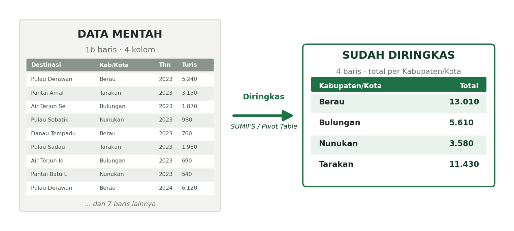
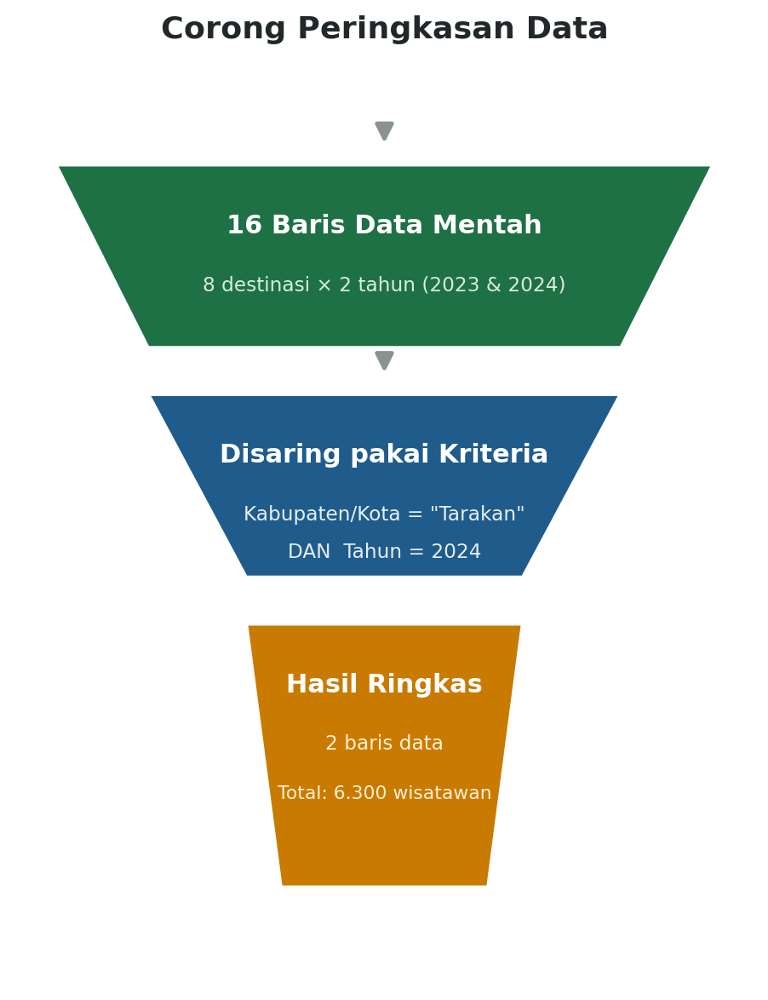
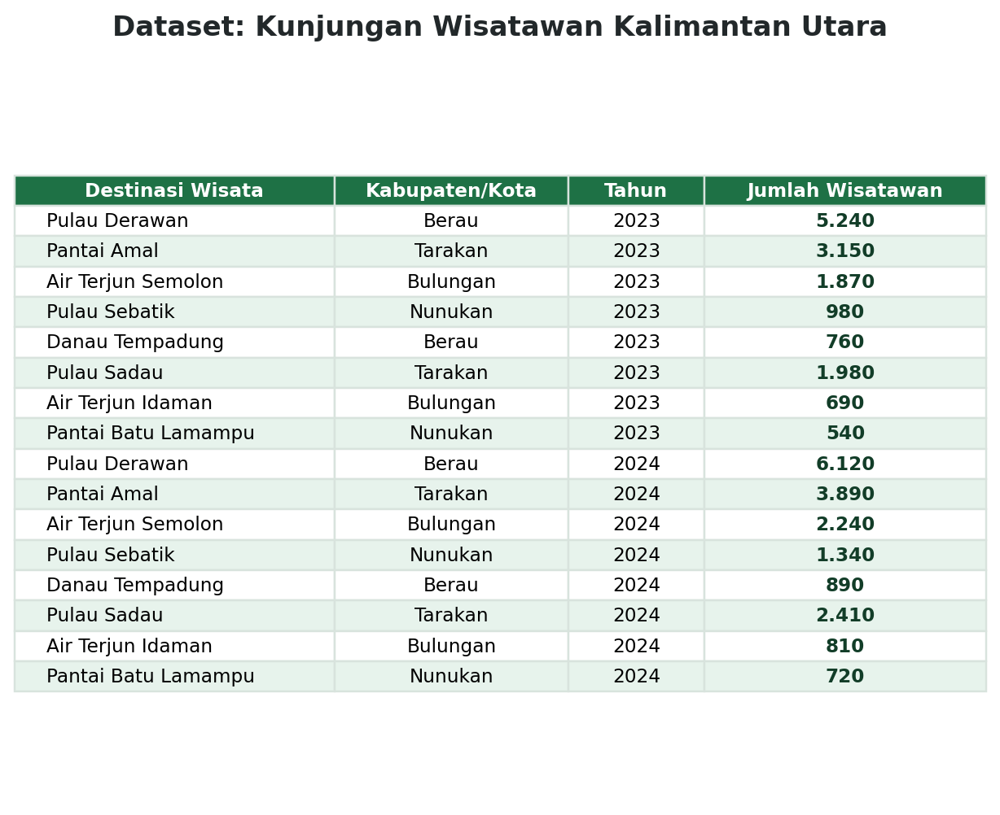
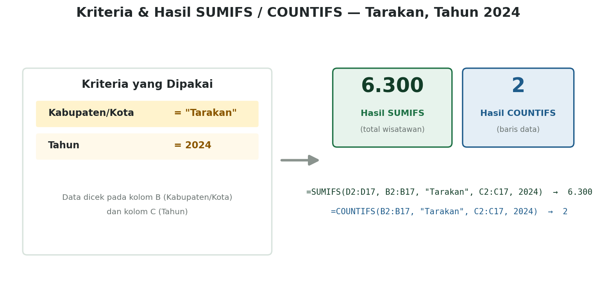
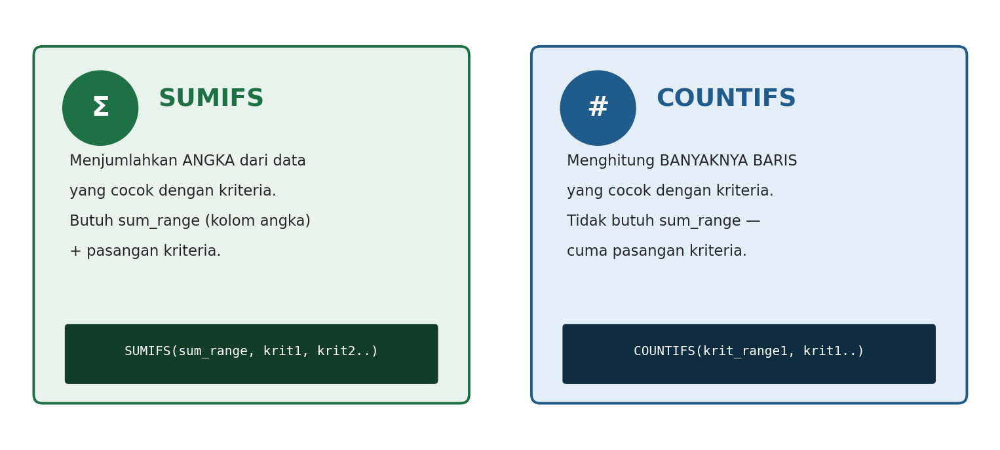
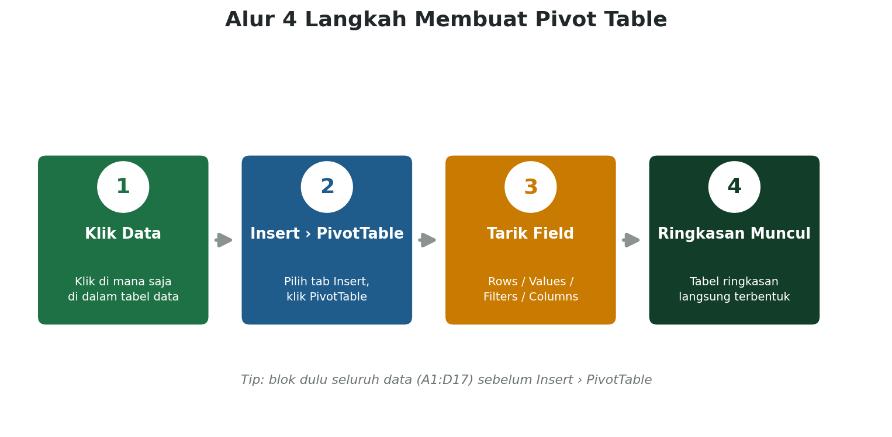
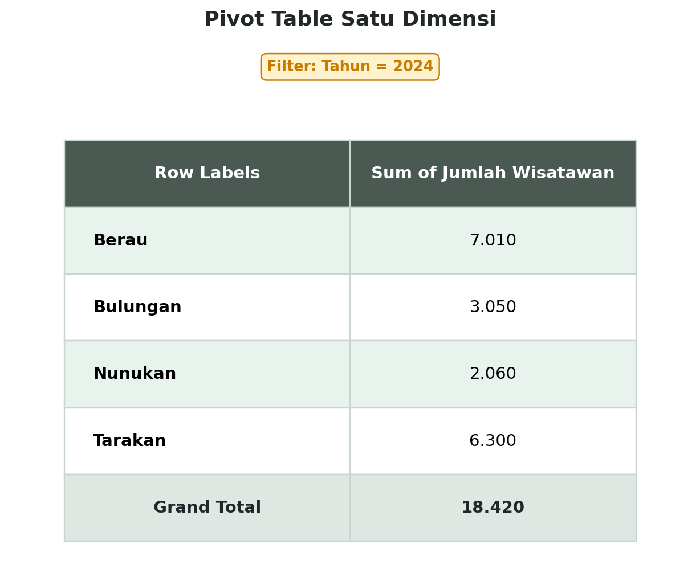
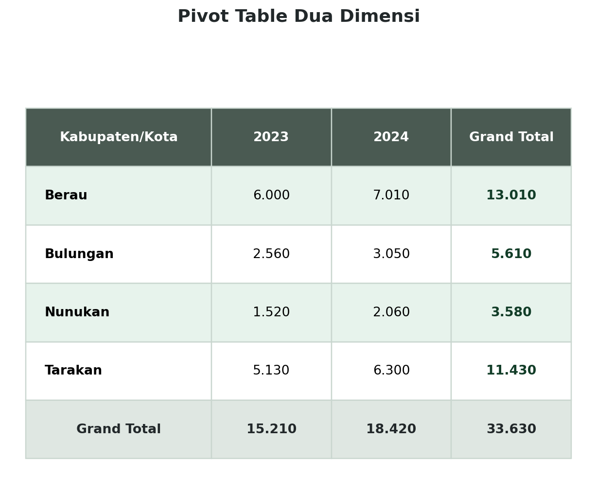

Pernah Nggak Sih Kalian Mikir Gini?
Bayangin Jadi Staf Dinas Pariwisata...
Kalian dikasih data kunjungan wisatawan ke 8 destinasi wisata, di 4 kabupaten/kota, selama 2 tahun. Total ada 16 baris data. Terus atasan kalian nanya: “Kota mana yang jumlah wisatawannya paling banyak tahun 2024?”
Masa iya kalian harus baca satu-satu, terus jumlahin manual pakai kalkulator? Kebayang kan capeknya kalau datanya bukan 16 baris, tapi 16.000 baris? Nah, di sinilah SUMIFS, COUNTIFS, dan Pivot Table jadi penyelamat kalian. Yuk, kita bahas satu-satu, santai aja!

Data mentah 16 baris → diringkas jadi 4 baris pakai SUMIFS / Pivot Table
Konsep Dasar
Kenapa Sih Data Perlu Diringkas?
Data mentah itu lengkap, tapi justru karena lengkap, dia jadi susah dibaca sekilas. Coba deh bayangin kalau kalian harus nyari informasi penting dari ratusan baris angka — pasti pusing! Makanya, data itu perlu “disaring” dulu pakai kriteria tertentu, baru deh keluar hasil yang benar-benar penting.

Data mentah → disaring pakai kriteria → hasil ringkas
Ada tiga cara utama buat meringkas data yang bakal kita pelajari di bab ini:
- SUMIFS — buat menjumlahkan angka dengan lebih dari satu syarat;
- COUNTIFS — buat menghitung banyaknya data dengan lebih dari satu syarat;
- Pivot Table — fitur ajaib yang bisa meringkas data cuma dengan tarik-tarik field, tanpa nulis formula sama sekali!
Fungsi Pertama
SUMIFS — Si Jago Jumlah Bersyarat
Di kelas VII, kalian udah kenal SUMIF, yang bisa menjumlahkan data berdasarkan satu syarat. Nah, SUMIFS itu “versi lebih kuat” dari SUMIF — dia bisa menjumlahkan data berdasarkan dua syarat atau lebih sekaligus.
Analoginya gini: kalau SUMIF itu kayak nyari baju cuma berdasarkan satu syarat (misalnya warna merah aja), SUMIFS itu kayak nyari baju yang warnanya merah DAN ukurannya M. Dua syarat harus dipenuhi bareng-bareng, baru dianggap cocok.
Coba kita praktikkan pakai data wisatawan Kalimantan Utara berikut ini.

Tabel A1:D17 — Destinasi Wisata, Kabupaten/Kota, Tahun, Jumlah Wisatawan
Misalnya kita mau tahu: “Berapa total wisatawan yang datang ke Tarakan pada tahun 2024?” Ada dua syarat di sini: kabupaten/kotanya harus Tarakan, DAN tahunnya harus 2024. Formulanya:

Kriteria (Tarakan, 2024) dan hasilnya: SUMIFS = 6.300, COUNTIFS = 2
Gampang, kan? Tinggal sebutkan data yang mau dijumlahkan, terus sebutkan pasangan (kolom syarat, nilai syarat) sebanyak yang kalian butuhkan.
Fungsi Kedua
COUNTIFS — Si Jago Hitung Bersyarat
Kalau SUMIFS itu buat menjumlahkan ANGKA, COUNTIFS itu buat menghitung BANYAKNYA BARIS DATA yang memenuhi syarat. COUNTIFS nggak peduli angkanya besar atau kecil — dia cuma menghitung, ada berapa baris yang cocok.
Masih pakai contoh yang sama: “Ada berapa banyak data yang tercatat untuk Tarakan tahun 2024?” Formulanya:
Perhatikan, COUNTIFS nggak butuh sum_range sama sekali, karena dia cuma menghitung baris, bukan menjumlahkan angka.
SUMIFS
Menjumlahkan angka dari data yang cocok kriteria.
COUNTIFS
Menghitung banyaknya baris data yang cocok kriteria.

Ringkasan visual: SUMIFS vs COUNTIFS
Level Up
Kenalan Sama Pivot Table
Sekarang, gimana kalau kalian mau ringkasan buat SEMUA kabupaten/kota sekaligus, bukan cuma satu-satu? Nulis SUMIFS berkali-kali tentu bisa, tapi capek. Nah, di sinilah Pivot Table jadi penyelamat.
Pivot Table itu ibarat asisten pribadi yang otomatis ngerangkum data buat kalian — tinggal tarik-tarik field ke tempat yang tepat, dan ringkasannya langsung muncul. Nggak perlu nulis formula sama sekali!

Klik data → Insert > PivotTable → Tarik field ke Rows/Values/Filters → Ringkasan muncul
Pivot Table Satu Dimensi
Dipakai kalau kalian cuma mau meringkas berdasarkan SATU kategori data, misalnya kabupaten/kota saja. Field Kabupaten/Kota ditarik ke area Rows, field Jumlah Wisatawan ditarik ke area Values, dan field Tahun ditarik ke area Filters (biar bisa difilter per tahun).

Total wisatawan tiap kabupaten/kota, filter Tahun = 2024
Pivot Table Dua Dimensi
Kalau kalian mau ringkasan yang lebih detail — misalnya per kabupaten/kota SEKALIGUS per tahun — tinggal tambah satu field lagi ke area Columns. Field Kabupaten/Kota tetap di Rows, field Tahun dipindah ke Columns, dan field Jumlah Wisatawan tetap di Values.

Tiap kabupaten/kota, tiap tahun, plus Grand Total-nya sekaligus
Enak banget, kan? Dengan sekali lihat, kalian langsung tahu Berau itu naik dari 6.000 ke 7.010, atau Nunukan yang angkanya masih paling kecil di antara semua kabupaten/kota.
Biar Nggak Error
Tips & Fakta Menarik
Kalau formula SUMIFS/COUNTIFS kalian mau di-copy ke sel lain, jangan lupa kasih tanda $ di depan kolom dan baris pada bagian data utamanya (misalnya $D$2:$D$17). Tanda $ ini disebut absolute reference — fungsinya kayak “mengunci” alamat sel supaya nggak ikut geser saat formula disalin. Kalau lupa dikunci, pas formula di-copy ke baris bawahnya, rentang datanya bisa ikut geser dan hasilnya jadi salah!
Kata “pivot” artinya “pusat” atau “poros”. Disebut begitu karena data di Pivot Table “berputar” mengelilingi kategori yang kalian pilih sebagai Rows dan Columns — makanya hasilnya bisa langsung berubah bentuk cuma dengan menukar posisi field-nya!
Sebelum Praktik
Rangkuman Kilat
SUMIFS
Menjumlahkan angka dengan lebih dari satu kriteria.
COUNTIFS
Menghitung baris data dengan lebih dari satu kriteria.
Pivot Table
Meringkas data besar otomatis, tanpa nulis formula.
Absolute Reference
Kunci alamat sel supaya formula nggak berantakan.
Sekarang giliran kalian praktik langsung! Buka LKPD “Meringkas Data Kunjungan Wisatawan Kalimantan Utara” dan kerjakan bareng kelompok kalian. Jangan takut salah — itu bagian dari belajar!
Cek Pemahaman
Yuk, Uji Diri Kalian!
Coba jawab dulu tanpa buka catatan. Klik "Lihat Jawaban" kalau sudah yakin dengan jawaban kalian.
Lihat Jawaban
Lihat Jawaban
Lihat Jawaban
Lihat Jawaban
Referensi Cepat
Kamus Kilat
| SUMIFS | Menjumlahkan angka dari data yang memenuhi lebih dari satu kriteria. |
| COUNTIFS | Menghitung banyaknya baris data yang memenuhi lebih dari satu kriteria. |
| Kriteria | Syarat yang harus dipenuhi supaya data ikut dihitung. |
| Absolute reference ($) | "Kunci" alamat sel supaya tidak berubah saat formula disalin ke sel lain. |
| Pivot Table | Fitur otomatis untuk merangkum data besar jadi ringkasan yang rapi. |
| Rows / Columns / Values / Filters | Area di panel PivotTable Fields yang menentukan bentuk ringkasan data. |